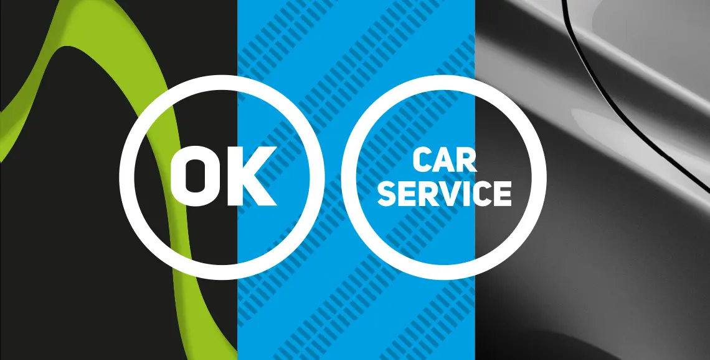
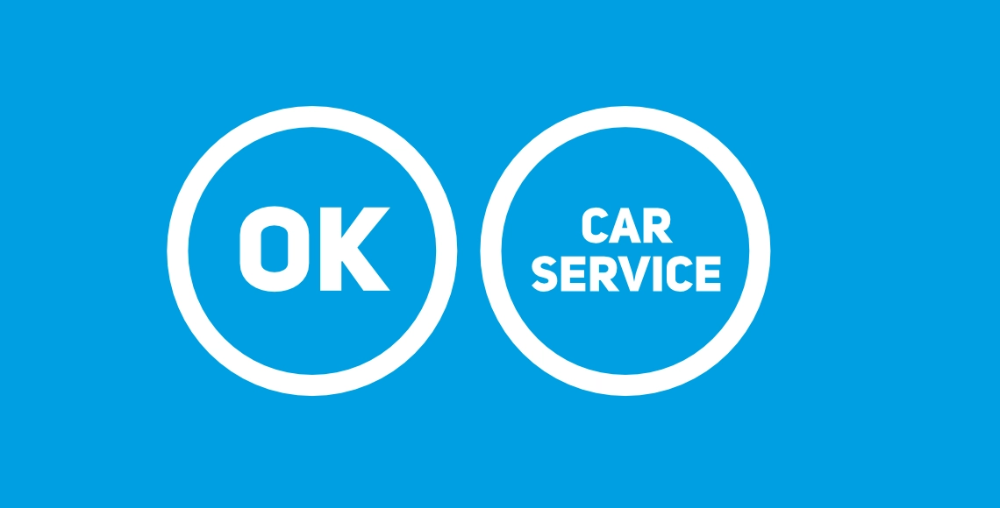

OK Carservice – digitale Präsentation
Digital gedacht. Klar gestaltet.
Von Webseitenlayouts und responsiven Präsentationen bis zu statischen Digitalbannern: Ich entwickle visuelle Konzepte mit klarer Struktur, durchdachter Gestaltung und einem Blick für die unterschiedlichen digitalen Formate.
Webdesign, responsive Layouts und statische digitale Werbemittel.
Webseitenkonzepte, Layoutgestaltung und Präsentations-Mockups
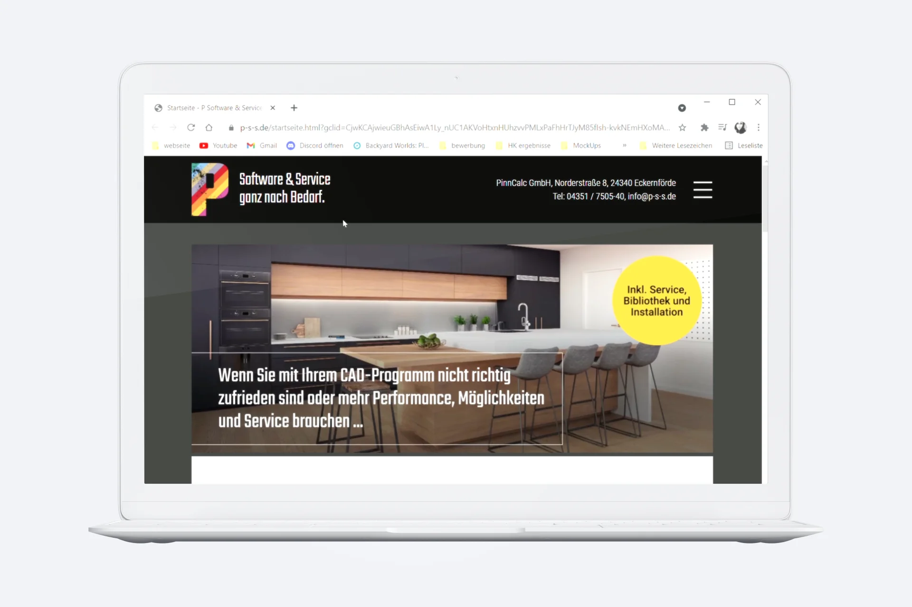
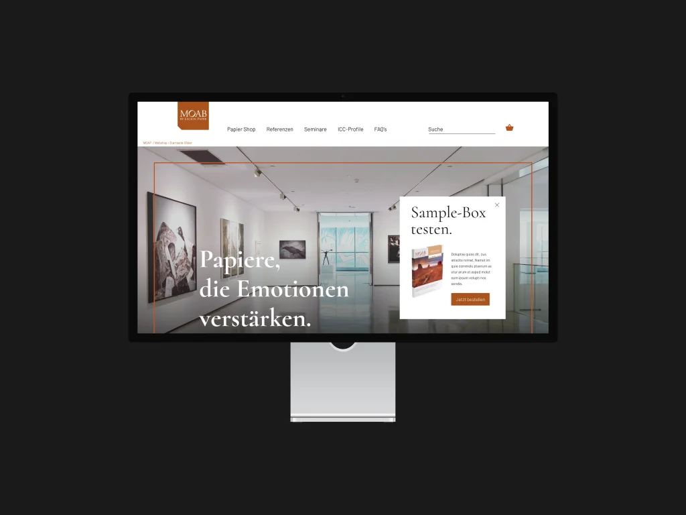
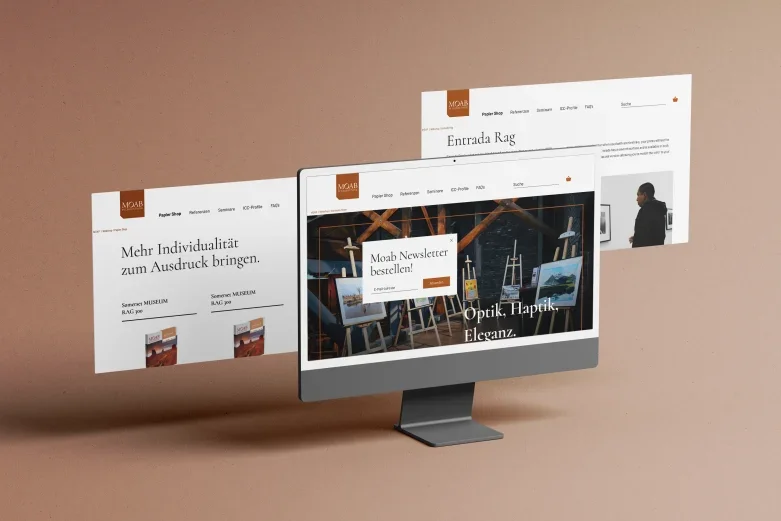
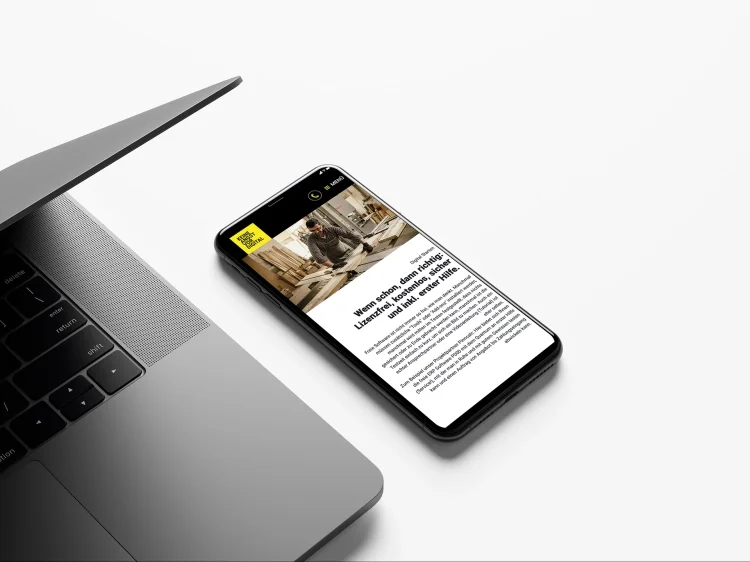
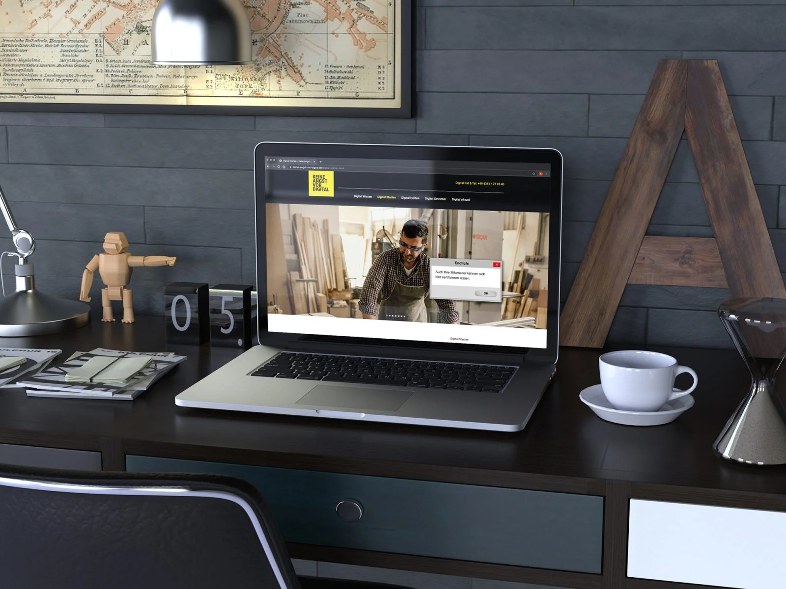
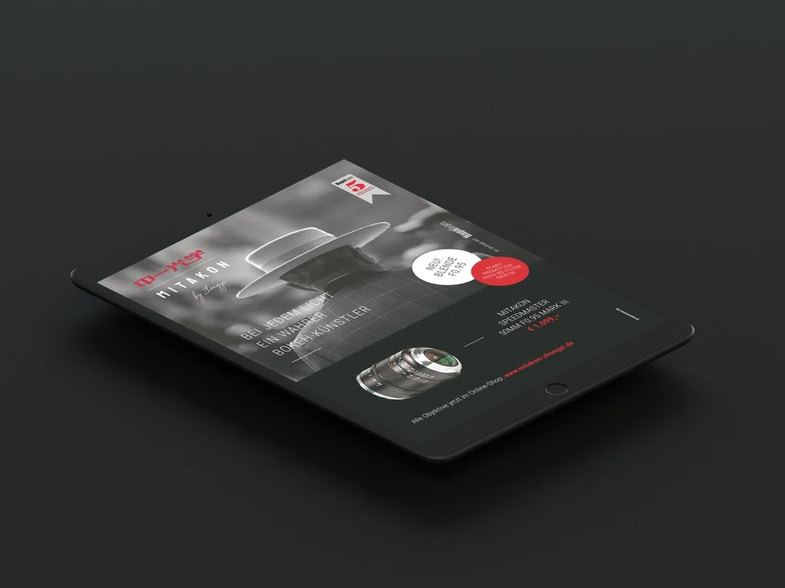
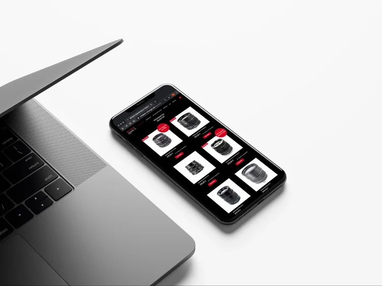
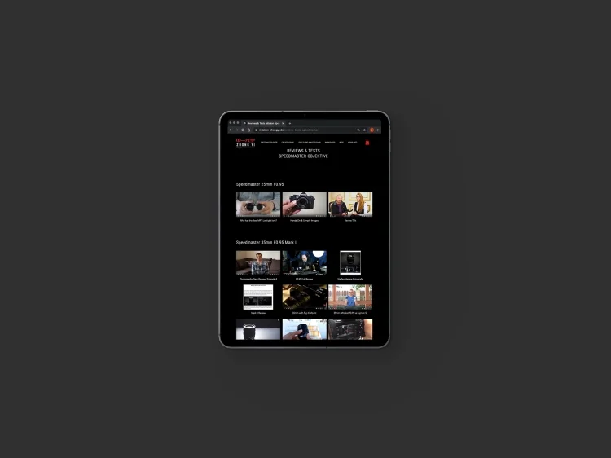
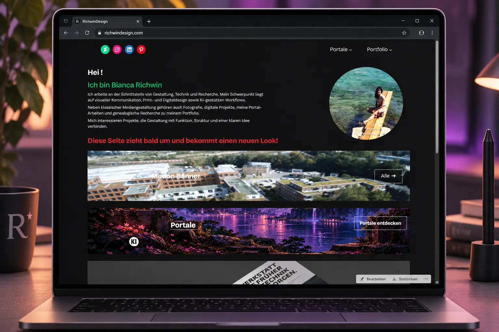
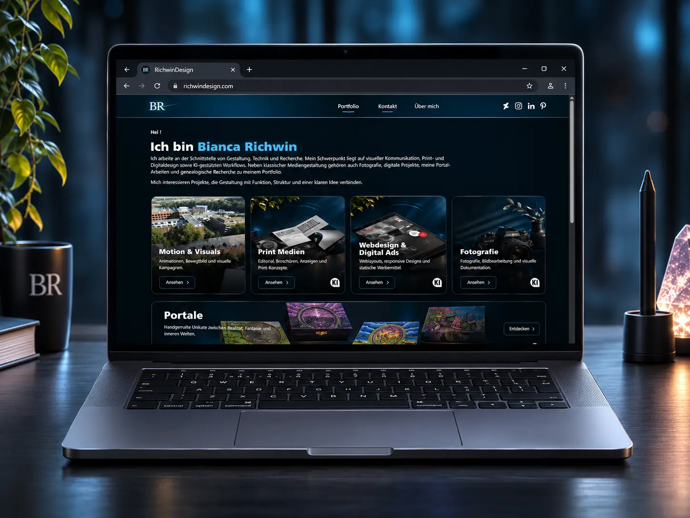
Responsive-Präsentationen, statische Banner und digitale Werbemittel
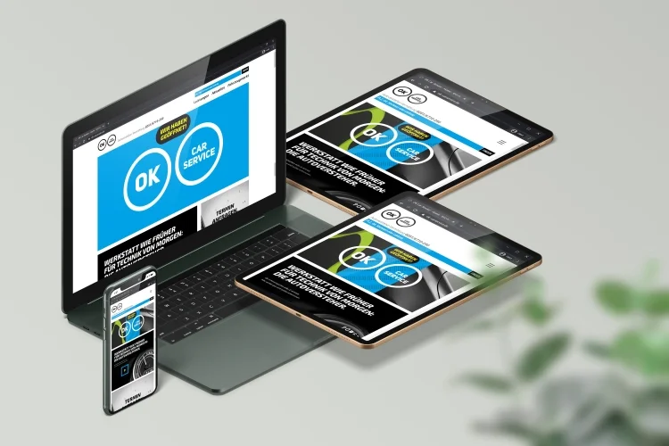


OK Carservice – digitale Präsentation
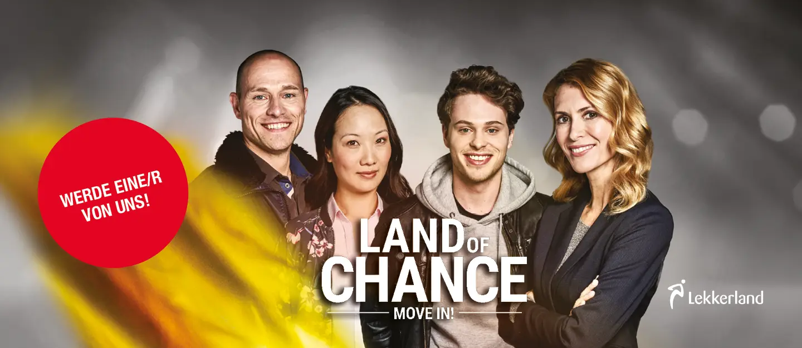
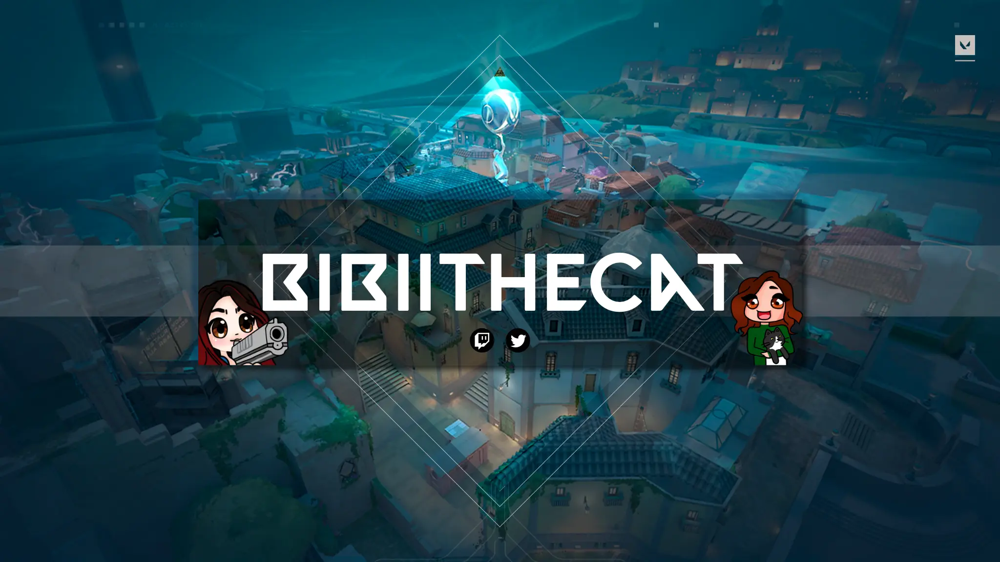